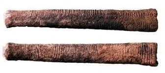
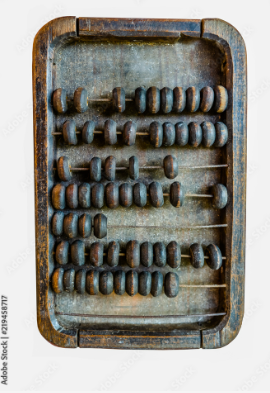
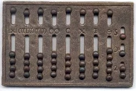

Insights · Essay
From Clay to Code
The evolution of data management and the birth of the spreadsheet revolution.
Part One: The sands of time
Humanity’s relationship with numbers started crude and unforgiving. The world was chaos — people, animals, and goods waiting to be tracked, traded, or lost. The first answer was simple: lines in the sand. A trader by the river scratching tally marks for sheep or grain wasn’t doing bookkeeping for sport — counting was survival.
Sand is a fickle ledger. Wind or a hoof could erase hours of work. Civilizations that needed permanence turned to clay. In the Fertile Crescent, Sumerians carved marks into tablets and baked them under the sun. Those tablets weren’t just receipts; they were wealth records, trade agreements, and early tax bills — durable enough to outlive empires, heavy enough that “taking your data to market” meant an ox and a strong back.
Elsewhere, different tools emerged. In Africa, notched bones like the Ishango Bone hint at abstract numerical thinking. In China and beyond, beads and strings seeded the abacus. Clever as they were, these systems tracked what already existed. They didn’t forecast, model scenarios, or ask “what if.” Still, sand, clay, and beads planted the obsession: organize the world so you can control it.

Part Two: Beads, ledgers, and order
As trade and empire scaled, sand and clay weren’t enough. The abacus — refined from Mesopotamia through China — turned counting into a portable craft: beads on rods for add, subtract, multiply, divide. Merchants across Asia and the Middle East relied on it for centuries.
Real-time calculation still isn’t history. Ledgers filled that gap. Venetian merchants helped popularize double-entry bookkeeping: every transaction in two places — debit and credit. Clarity, balance, accountability. Suddenly a business could see not only what it owned, but where money moved.
The cost was human: clerks with quills, no undo, books vulnerable to smudge and fire. By the Industrial Revolution, global supply chains and factory output outran abacus and ledger alike. Mechanical calculators — Pascal’s Pascaline, later the Arithmometer — arrived as gear-driven answers to volume. Progress, but still bottlenecked by hands entering every figure twice.

Part Three: Mechanical march
Industrial complexity made accounting a nightmare of volume. Pascal built the Pascaline so his father could tally taxes. Babbage dreamed bigger: the Difference Engine for polynomials, then the Analytical Engine — a programmable mechanical ancestor of the computer that the era’s manufacturing couldn’t fully deliver.
By the 19th and early 20th centuries, commercial calculators and adding machines filled offices. Ledgers standardized; forms tightened. Machines and books merged into one workflow — and humans remained the fragile middle layer. Punch cards and machines like ENIAC signaled the end of pure analog. The stage was set for dynamic, living data.

Part Four: VisiCalc and living grids
By the 1960s, businesses were drowning in data. Punch-card systems helped but stayed rigid. Microcomputers cracked the door; the Apple II put capable hardware on desks. The purpose arrived in 1979: Dan Bricklin, watching a professor recalculate projections on a chalkboard, imagined a digital grid that updated as numbers changed. With Bob Frankston he built VisiCalc — the first electronic spreadsheet.
Data stopped being static. Change one assumption and forecasts rippled in seconds. Accountants and managers did in minutes what used to take days. VisiCalc sold widely, pulled Apple II into business, and proved the personal computer wasn’t a hobby — it was an operating system for decisions. Lotus 1-2-3 and later Excel would eclipse it, but the idea was irreversible: a living ledger.
Part Five: From spreadsheets to BI
Lotus perfected the formula for the IBM PC era. Excel won the GUI decade with pivots, charts, and VBA — a Swiss Army knife for models large and small. Cloud collaboration via tools like Google Sheets made the grid multiplayer. Then BI platforms — Power BI, Tableau, and peers — connected directly to databases, scaled past desktop grids, and turned analysis into interactive dashboards refreshed from the source.
Even so, the spirit of the spreadsheet remains: cells, formulas, scenarios. Modern BI is the next chapter of the same story that started with tallies in sand. VisiCalc’s legacy isn’t nostalgia — it’s the reminder that one clear idea about how people think with numbers can reshape how organizations decide.
That through-line — from clay permanence to dynamic dashboards — is why Justified Analytics existed: make the record trustworthy, then make it visible enough to act on.